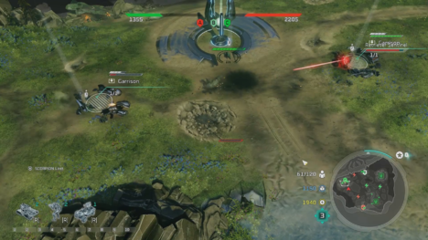

HALO WARS 2
It is said that in the land of the blind, the one-eyed man is king. In that sense, Halo Wars 2 is the de facto king of real-time strategy games on consoles, where the venerable genre is underrepresented because of the challenges of managing a lot of units at once on a gamepad. Like its predecessor, Halo Wars 2 does a reasonably good job of overcoming many – not all – of those challenges, but compared to the best RTS games on PC, where it also exists, its campaign missions are flat and unambitious, and its distinctive Blitz multiplayer mode sacrifices the stability of a level playing field in the name of fast and unpredictable action.
I admire Microsoft’s effort to expand its prized Halo series into something that spans beyond an endless procession of first-person shooters, and with Halo Wars 2 (like Halo Wars before it) we get to experience this sci-fi universe from a perspective that emphasizes the scope of its battles. Seeing instantly recognizable vehicles like Warthogs and Banshees on the field adds an inherited personality to what is otherwise a fairly standard set of units. While there are substantial differences in tactics thanks to the unique Banished (a rebel faction of the Covenant) units like suicide grunts and airborne Blisterback artillery, the greatest distinction between them and the UNSC Marines comes from support powers like bombardments and buffs cast from above.

he single-player campaign’s 12 missions took me roughly eight hours to complete, including restarting a couple of them a few times. The mission designs are nothing special – though they avoid the trap of repeating variations on the basic “go destroy the enemy base” cliche, they lean heavily on hero-focused objectives like leading your Spartans around the map and holdout missions against waves of enemies. There’s enough variety to keep them from feeling repetitive, but only a couple think outside the box of what StarCraft did almost 20 years ago, and the static base building on pre-determined plots doesn’t provide a lot of flexibility when it comes to build orders. Much of it is in the vein of the “campaign as multiplayer tutorial” model, teaching you which units counter what, how to deploy artillery units, and how to capture the majority of a map’s control points to win. Each one does come with a range of side objectives (such as keeping a specific unit alive, destroying extra bases within a time limit, or collecting resources from the map) to give them replayability on top of simply turning up the difficulty, though.
Halo Wars 2 will scratch a real-time strategy itch and give you a dose of Halo-Universe flavor with a decent story, but it won’t go much deeper than that. A run-of-the-mill campaign, controls that hamper micromanagement, conspicuous bugs, and multiplayer that relies on luck limit its long-term appeal, but its fast and flashy action makes it fun for a while.
Other Reviews
FOR HONOR

SNIPER ELITE 4

STEEP

DEAD RISISNG 4